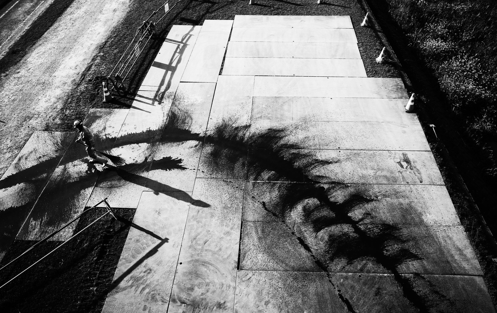
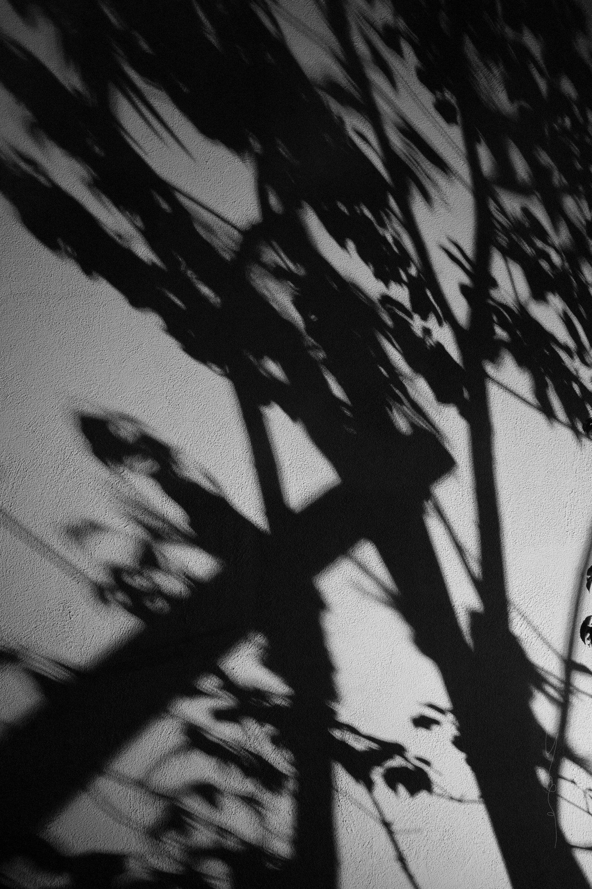

A lifelong black-and-white photography project documenting Japan’s urban reality and the spirit of the Kami.
Prints available on request · yosotattoo@gmail.com

A lifelong black-and-white photography project documenting Japan’s urban reality and the spirit of the Kami.

Tattoo artist · Multimedia practitioner · Miyazaki
Yoso is a tattoo artist and multimedia practitioner based in Miyazaki, Japan.
The work moves between tattooing, art installation, painting and writing, and it grows out of a daily contemplative practice that includes meditation and Buddhist and Shinto observance.
Yosokuro is a lifelong black-and-white photography project. It records Japan’s urban reality, from late trains, back streets, signage and puddles to summer fireworks, and looks in those places for the spirit of the Kami.
Alongside the photographs, Yoso paints Shinsei, an abstract series built on soft edges and rooted in inner awareness and calm.
New Yosokuro photographs and news, sent by email now and then.